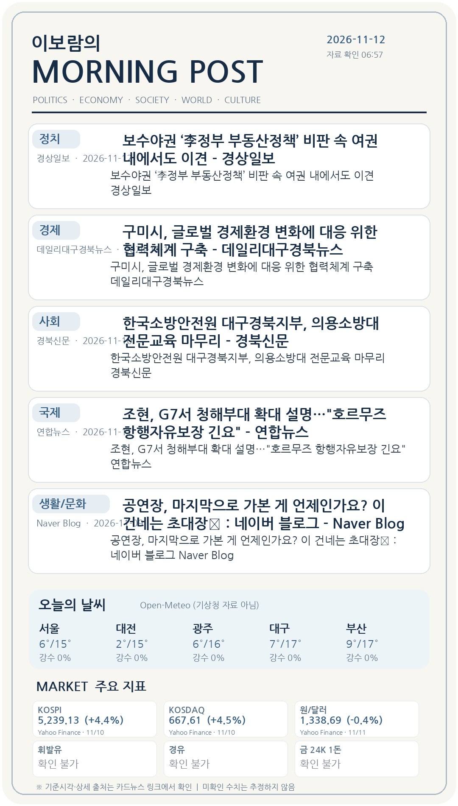
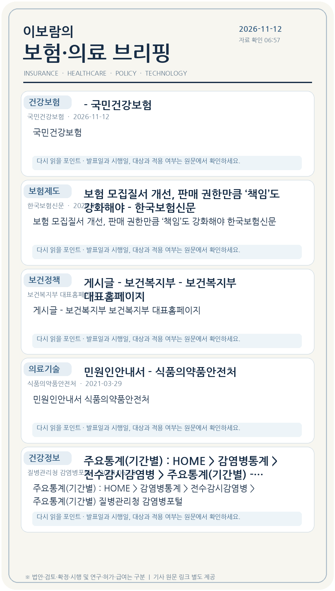

뉴스: Google 뉴스 RSS에 표시된 기사·발행일 기준. 기사 본문을 검증하지 못한 세부 사항은 단정하지 않습니다.
날씨: Open-Meteo 참고 예보(기상청 공식 예보 아님). 증시·환율: Yahoo Finance 참고시세(한국거래소/은행 공식 고시 아님). 휘발유·경유·금 시세는 확인하지 못하면 값을 표시하지 않습니다. 6시 30분 도착은 보장되지 않습니다.